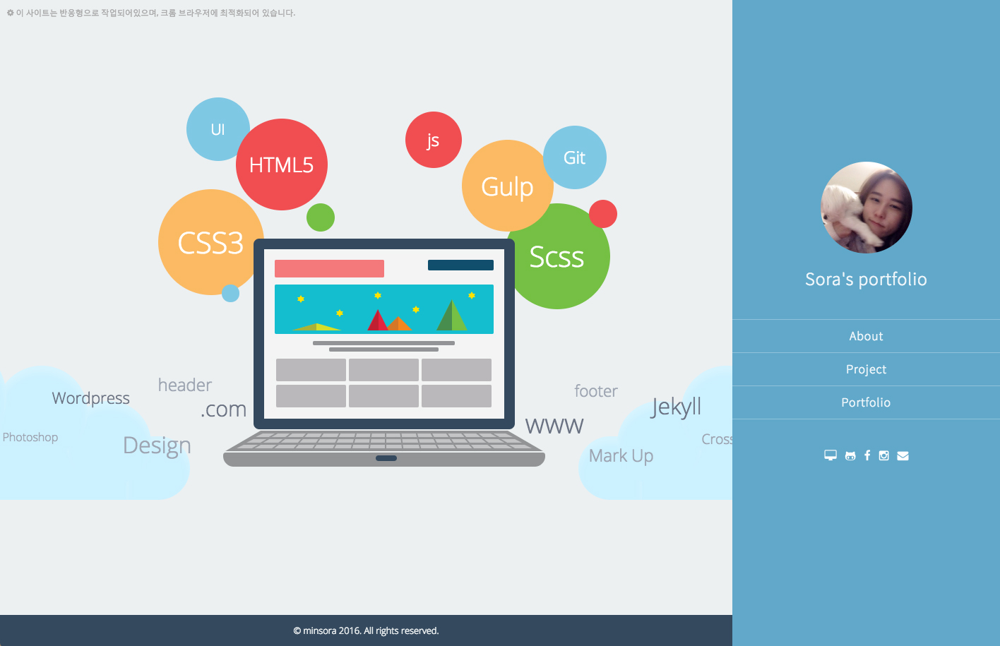
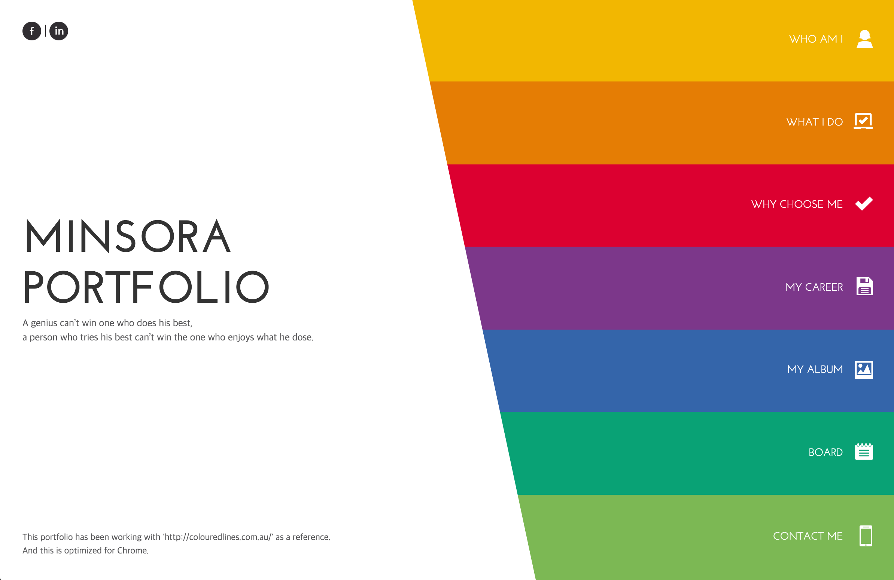
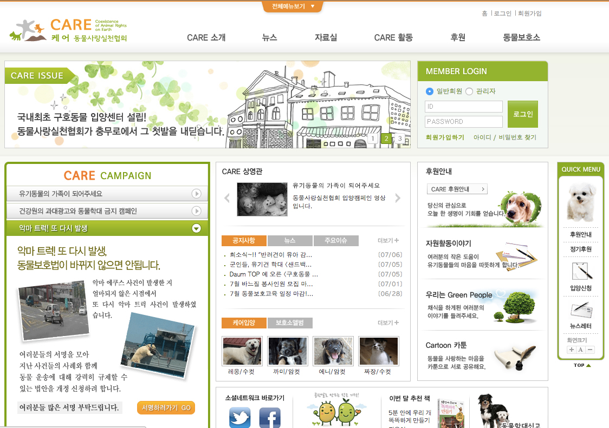

MinSora
MinSora
Front End Developer
Portfolio
2016
-
 개인 포트폴리오 2016 v.2
View
2016년에 두번째로 작업한 개인 포트폴리오 프로젝트입니다.
개인 포트폴리오 2016 v.2
View
2016년에 두번째로 작업한 개인 포트폴리오 프로젝트입니다.
- - 기간 :
- 2016년 (1주간)
- - 기술 :
- Design/Html5/Css3/Sass/Jquery/AngularJS/PlugIn
- - 성과 :
- AngularJS 공부하며 포트폴리오를 작업해보았습니다.
-

개인 포트폴리오 2016
View
2016년 초에 작업한 개인 포트폴리오 프로젝트입니다.
- - 기간 :
- 2016년
- - 기술 :
- Design/Html5/Css3/Sass/Jquery/jekyll/Responsive
- - 성과 :
- 그동안의 성장과 jekyll을 공부하며 sass를 사용하여 블로그 형식으로 포트폴리오를 작업해보았습니다.
2015
-

개인 포트폴리오 2015
View
2015년에 작업한 개인 포트폴리오 프로젝트입니다.
- - 기간 :
- 2015년 1월 (2주간)
- - 기술 :
- Benchmarking/Html5/Css3/Jquery/Responsive
- - 성과 :
- 저를 가장 잘 표현할 수 있는 디자인과 그동안의 성장을 포트폴리오에 담아내기 위해 노력하였습니다.
2012
-

CARE 동물사랑실천협회
View
퍼블리셔 학원에서 진행한 개인 포트폴리오 프로젝트입니다.
- - 기간 :
- 2012년 7월 (1달간)
- - 기술 :
- Design/Html/Css/javascript/jquery
- - 성과 :
- 학원을 다니면서 그동안 배운 모든 것을 표현해내기 위해 노력하였습니다.